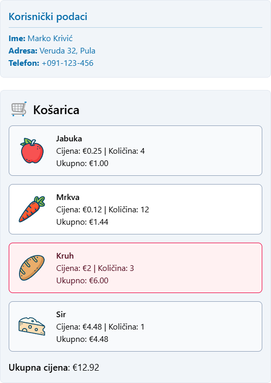

Programsko inženjerstvo
Nositelj: doc. dr. sc. Nikola Tanković
Asistent: mag. inf. Alesandro Žužić
Ustanova: Sveučilište Jurja Dobrile u Puli, Fakultet informatike u Puli
 Fakultet informatike u Puli
Fakultet informatike u Puli
[2] Ref & Attribute Bindings
Vue.js omogućuje jednostavno povezivanje podataka s HTML elementima kroz reaktivne varijable i vezivanje atributa. Ove funkcionalnosti omogućuju dinamičko ažuriranje korisničkog sučelja na temelju promjena u podacima.
Posljednje ažurirano: 19. ožujka 2025.
- Programsko inženjerstvo
- [2] Ref & Attribute Bindings
Osnove reaktivnosti
ref() je funkcija u Vue.js koja se koristi za kreiranje reaktivnih varijabli. Ova funkcija omogućuje praćenje promjena u podacima i automatsko ažuriranje korisničkog sučelja kada se podaci promijene.
import { ref } from 'vue';
// da bi koristili reaktivne varijable potrebno je učitati ref iz vue paketa
const count = ref(0);
// svaki put kada se varijabla count promijeni
// DOM se ažurira
ref() uzima proslijeđeni argument i vraća ga umotanog unutar ref objekta s .value funkcijom:
const count = ref(0);
console.log(count); // { value: 0 }
console.log(count.value); // 0
count.value++;
console.log(count.value); // 1
Behind the scenes:
{
"dep": {
"version": 1,
"sc": 0
},
"__v_isRef": true,
"__v_isShallow": false,
"_rawValue": 1,
"_value": 1
}
Što je to točno "reaktivnost"?
Reaktivnost je programska paradigma koja nam omogućuje prilagodbu promjenama na deklarativan način.
Najjednostavniji primjer gdje možemo prikazati reaktivnost je kod excel tablice:
| A | B | C | |
|---|---|---|---|
| 0 | 2 | ||
| 1 | 8 | ||
| 2 | 10 |
U ovom primjeru, ćelija A2 sadrži formulu = A0 + A1, gdje ako mijenjamo ćelije A0 ili A1, primijetit ćemo da se automagično (automagically) mijenja i vrijednost ćelije A3
automagically = automatically and in a way that seems magical
Naravno JavaScript se ne ponaša na ovaj način. Ako bi napisali kôd koji je usporediv u JavaScriptu:
let A0 = 1
let A1 = 2
let A2 = A0 + A1
console.log(A2) // 3
A0 = 2
console.log(A2) // Still 3
Kada mijenjamo A0, A2 se neće automatski promijeniti. Tako da, ako želimo to postići, moramo prvo ponovno pokrenuti kôd koji će ažurirati A2, pa ćemo onda staviti kôd unutar funkcije.
let A2
function update() {
A2 = A0 + A1
}
Sada je bitno definirati nekoliko ključnih stvari:
update()funkcija stvara nuspojavu (side effect), to jest je učinak (effect), zato što mijenja stanje programa.A0iA1se smatraju zavisnim varijablama kod učinka, jer se njihove vrijednosti koriste za pokretanje tog učinka. Tako da možemo i reći da se taj učinak preplatio na svoje zavisne varijable.
Ono što nam sada treba je nekakva magična funkcija koja može pozvati update() učinak kad god se A0 ili A1 zavisne varijable promjene.
whenDepsChange(update)
Ova whenDepsChange() funkcija ima sljedeće zadatke:
- Prati kada se varijable čitaju, na primjer kod evaluacije
A0 + A1, čitamo objeA0iA1varijable. - Ako čitamo varijablu dok je pokrenut učinak, onda će se taj učinak preplatiti na tu varijablu. Na primjer kada čitamo
A0iA1kada pokrenemoupdate()funkciju, onda se ta funkcija preplati na objeA0iA1varijable nakon prvog poziva. - Detektirati kada se varijabla promjeni. Na primjer kada se
A0varijabli dodijeli nova vrijednost, treba obavijestiti sve svoje pretplatnike da se ponovno pokrenu, u ovom slučaju samoupdate()pretplatnika da se ponovno evaluira.
Kako reaktivnost radi kod Vue?
U JavaScriptu ne možemo pratiti čitanje i pisanje lokalnih varijabli, ali možemo presresti pristup svojstvima objekata pomoću getter/setter i Proxy. Vue koristi Proxy za reaktivne objekte, dok se getter/setter koriste za ref.
Pseudo kod za ref():
function ref(value) {
const refObject = {
get value() {
track(refObject, 'value')
return value
},
set value(newValue) {
value = newValue
trigger(refObject, 'value')
}
}
return refObject
}
track() funkcija prati trenutačno aktivni učinak. Ako postoji, pretražujemo pretplaćene učinke za praćeno svojstvo i dodajemo učinak u taj skup. Ako za svojstvo nije pronađen pretplaćen učinak (jer se prati prvi put), onda se stvara.
function track(target, key) {
if (activeEffect) {
const effects = getSubscribersForProperty(target, key)
effects.add(activeEffect)
}
}
Unutar trigger() funkcije ponovno pretražujemo pretplaćene učinke za praćeno svojstvo, no ovog puta aktivira sve učinke preplaćene na varijablu koja se mijenja:
function trigger(target, key) {
const effects = getSubscribersForProperty(target, key)
effects.forEach((effect) => effect())
}
Sada se možemo vratiti na funkciju whenDepsChange():
function whenDepsChange(update) {
const effect = () => {
activeEffect = effect
update()
activeEffect = null
}
effect()
}
Ona omotava update() funkciju u učinak koja se prije pokretanja postavlja kao trenutačno aktivni učinak. Time se omogućuje pozivanje track() funkcije pri ažuriranju da pronađe trenutačno aktivni učinak.
Tako stvaramo reaktivni učinak – funkcija koja automatski prati svoje ovisnosti i ponovno se pokreće kada se one promijene.
Vue pruža watchEffect() za praćenje promjena i computed() za deklarativno računanje vrijednosti koji se ponašaju kao reaktivni učinci:
Primjer koristeći watchEffect():
import { ref, watchEffect } from 'vue'
const A0 = ref(0)
const A1 = ref(1)
const A2 = ref()
watchEffect(() => {
// prate se A0 i A1 varijable
A2.value = A0.value + A1.value
})
// pokreće učinak
A0.value = 2
Ili na deklarativni način koristeći computed():
import { ref, computed } from 'vue'
const A0 = ref(0)
const A1 = ref(1)
const A2 = computed(() => A0.value + A1.value)
A0.value = 2
Reaktivni učinci omogućuju automatsko praćenje i ažuriranje podataka gdje Vue komponente koriste ove tehnike za ažuriranje DOM-a na učinkovit način.
import { ref, watchEffect } from 'vue'
const count = ref(0)
watchEffect(() => {
document.body.innerHTML = `Count is: ${count.value}`
})
// automatski ažurira DOM
count.value++
Ovo je zapravo slično načinu na koji Vue komponente održavaju sinkronizaciju stanja i DOM-a. Svaka komponenta stvara reaktivni učinak za prikazivanje i ažuriranje DOM-a, iako Vue koristi učinkovitije metode od innerHTML.
Dubinska i plitka reaktivnost shallowRef
ref() automatski prati promjene unutar objekata i nizova, što znači da su svi unutarnji elementi također reaktivni.
import { ref } from 'vue'
const obj = ref({
nested: { count: 0 },
arr: ['foo', 'bar']
})
function mutateDeeply() {
obj.value.nested.count++
obj.value.arr.push('baz')
}
Ako želimo izbjeći dubinsku reaktivnost, onda koristimo shallowRef:
const state = shallowRef({ count: 1 })
// NE pokreće promjenu
state.value.count = 2
// pokreće promjenu
state.value = { count: 2 }
reactive()
Osim ref(), reaktivno stanje možemo deklarirati s pomoću reactive(), koja čini cijeli objekt reaktivnim:
import { ref, reactive } from 'vue'
const state_1 = ref({ count: 8 })
const state_2 = reactive({ count: 8 })
console.log(state_1.value); // { count: 8 }
console.log(state_2); // { count: 8 }
console.log(state_1.value.count); // 8
console.log(state_2.count); // 8
reactive() vs ref():
reactive()se koristi za reaktivne objekte, ali se preporučuje korištenjeref()za jednostavniju i fleksibilniju upotreburef()se može koristiti za bilo koju vrstu podataka, dokreactive()radi samo s objektima
Vue automatski ažurira DOM kada se promijeni reaktivna varijabla. Ovo se događa asinkrono, što znači da se ažuriranja grupiraju radi boljih performansi.
Sintaksa predloška (Template Syntax)
Sintaksa predloška u Vue.js omogućuje dinamičko povezivanje podataka s HTML-om. Koristi se za prikazivanje podataka i izvršavanje JavaScript izraza unutar HTML-a.
Za prikazivanje reaktivnih podataka koristite dvostruke vitičaste zagrade {{ }}.
<script setup>
import { ref } from 'vue'
const tekst = ref("Hello, world!")
</script>
<template>
<div>
{{ tekst }}
</div>
</template>
v-html
Ako želimo prikazati HTML, onda koristimo direktivu v-html.
<template>
<div>{{ htmlKod }}</div>
<div v-html="htmlKod"></div>
</template>
<b>Hello</b> Hello
Nikada ne koristite
v-htmls neprovjerenim korisničkim podacima jer može dovesti do sigurnosnih rizika kao što su XSS napadi
JavaScript izrazi
Unutar vitičastih zagrada možemo koristiti jednostavne JavaScript izraze.
Primjer 1:
<script setup>
import { ref } from 'vue'
const tekst = ref("Hello, world!")
</script>
<template>
<div>
{{ tekst.toUpperCase() }}
</div>
</template>
Output: HELLO, WORLD!
Primjer 2:
<script setup>
import { ref } from 'vue'
const velikaSlova = ref(false);
const text = ref("Hello")
</script>
<template>
<div class="h-full flex justify-center items-center">
{{ velikaSlova ? text.toUpperCase() : text.toLowerCase() }}
</div>
</template>
Output: hello, world!
Povezivanje atributa (Attribute Bindings)
Povezivanje atributa omogućuje dinamičko postavljanje vrijednosti HTML atributa na temelju reaktivnih podataka.
- Vitičaste zagrade se koriste za interpolaciju teksta, ali NE rade unutar HTML atributa. Umjesto toga, koristite direktivu
v-bind.
Direktiva v-bind (skraćeno :)
Direktiva v-bind omogućuje povezivanje vrijednosti atributa s reaktivnim podacima.
<a :href="url">Link</a>
Boolean atributi (npr. disabled, checked) mogu se dinamički kontrolirati:
<button :disabled="isDisabled">
Klikni me
</button>
Možemo dinamički postaviti više atributa koristeći objekt:
<div v-bind="{ id: dynamicId, class: dynamicClass }"></div>
Unutar v-bind možemo koristiti JavaScript izraze:
<p :class="isActive ? 'active' : 'inactive'">Status</p>
Isto tako možemo pozivati funkcije unutar v-bind:
<p :style="getStyle()">Dinamički stil</p>
Povezivanje klasa i stilova
Vue omogućuje dinamičko upravljanje klasama i stilovima s pomoću v-bind (:class i :style). Možemo koristiti objekte, nizove ili funkcije za definiranje uvjetnih stilova.
1. Korištenje objekata
Jedan način je korištenje objekata, gdje su ključevi nazivi klasa, a vrijednosti boolean varijable koje određuju hoće li se klasa primijeniti.
<script setup>
import { ref } from 'vue'
const hasUnderline = ref(false)
const hasError = ref(true)
</script>
<template>
<div :class="{ underline: hasUnderline, 'text-red-600': hasError }">
Dinamične klase
</div>
</template>
- Ako je
hasUnderline = true,<div>će dobiti klasu"underline" - Ako je
hasError = true, dobit će i"text-red-600"
2. Korištenje polja
Kad želimo primijeniti više klasa, možemo koristiti polje.
<script setup>
import { ref } from 'vue'
const activeClass = ref('font-bold')
const errorClass = ref('text-red-600')
</script>
<template>
<div :class="[activeClass, errorClass]">Dinamične klase</div>
</template>
- Vue će automatski spojiti klase u "font-bold text-red-600".
- Možemo dinamički mijenjati pojedine elemente niza
Ako želimo dodati uvjete unutar niza:
<script setup>
import { ref } from 'vue'
const isActive = ref(false)
const hasError = ref(false)
</script>
<template>
<div :class="['text-lg',
isActive ? 'font-bold' : 'font-normal',
hasError ? 'text-red-600' : 'text-black']">
Kombinacija niza i uvjeta
</div>
</template>
3. Dinamičko povezivanje stilova
Svojstva možemo definirati kao objekte unutar :style atributa.
<script setup>
import { ref } from 'vue'
const activeColor = ref('blue')
const fontSize = ref(20)
</script>
<template>
<div :style="{ color: activeColor, fontSize: fontSize + 'px' }">
Dinamični stilovi
</div>
</template>
- Boja i veličina fonta se ažuriraju dinamički
4. Korištenje funkcija za izračunavanje klasa i stilova
<script setup>
import { ref } from 'vue'
const isActive = ref(false)
const hasError = ref(true)
const calculatedClass = () => ({
'underline': isActive.value,
'text-red-600': hasError.value
})
</script>
<template>
<div :class="calculatedClass()">
Složeni stilovi
</div>
</template>
- Vue automatski ažurira klase i stilove kada se varijable promijene
Samostalni zadatak za vježbu 2
Zadatak za dodatni bod
Korištenjem priloženih podataka u JSON formatu potrebno je implementirati prikaz korisničkih podataka i sadržaja košarice u HTML-u. (bez korištenja direktiva v-for i v-if)
1. Prikaz korisničkih podataka
- Prikazati ime, prezime, adresu i broj telefona korisnika
- Ako je korisnik administrator (jeAdmin: true), tekst korisničkih podataka treba biti obojen plavom bojom. U suprotnom, koristiti crnu boju.
2. Prikaz sadržaja košarice
- Svaka stavka iz košarice treba biti prikazana u obliku liste
- Za svaku stavku prikazati:
- Naziv proizvoda
- Slika proizvoda
- Jediničnu cijenu
- Količinu
- Ukupnu cijenu stavke (jedinična cijena × količina)
- Implementirati funckije:
dohvatiCijenu(naziv)koja vraća cijenu proizvoda po nazivusveukupnaCijena()koja vraća ukupnu cijenu svih proizvoda u košaricinajskupljaStavka()koja vraća naziv stavke s najvećom ukupnom cijenom
- Stavku s najvećom ukupnom cijenom obojiti crvenom bojom
JSON podaci:
slike = {
"Jabuka": "https://www.svgrepo.com/show/530203/apple.svg",
"Mrkva": "https://www.svgrepo.com/show/530216/carrot.svg",
"Sir": "https://www.svgrepo.com/show/530219/cake.svg",
"Kruh": "https://www.svgrepo.com/show/530223/bread.svg",
}
proizvodi = [
{ naziv: "Jabuka", cijena: 0.25 },
{ naziv: "Mrkva", cijena: 0.12 },
{ naziv: "Kruh", cijena: 2.00 },
{ naziv: "Sir", cijena: 4.48 }
]
korisnik = {
jeAdmin: true,
osobni_podaci: {
ime: "Marko",
prezime: "Krivić",
adresa: {
grad: "Pula",
ulica: "Veruda",
broj: 32
},
broj_telefona: "+091-123-456"
},
kosarica: [
{ naziv: "Jabuka", količina: 4 },
{ naziv: "Mrkva", količina: 12 },
{ naziv: "Sir", količina: 1 },
{ naziv: "Kruh", količina: 3 },
]
}
Primjer rješenja:
